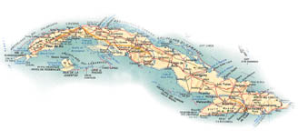

SERVIZI MARITTIMI E AEREI
ITALIA-CUBA
CUBA-ITALIA

Centrosped srl Spedizioni Internazionali
Via Luigi Gussalli, 13 - 25131 - BRESCIA - ITALY
Tel. ++39 0 30 3581363 / 3581355 Fax 3581345
E-mail: info@centrosped.it
VISITA IL NOSTRO NUOVO SITO INTERNET
HOME PAGE
SEZIONE CUBA